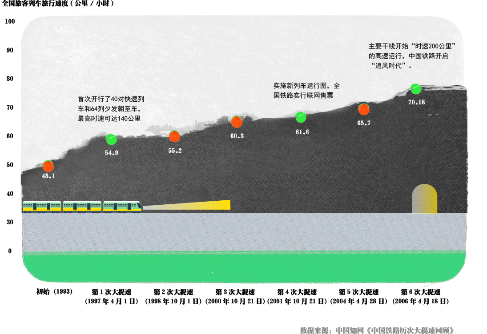
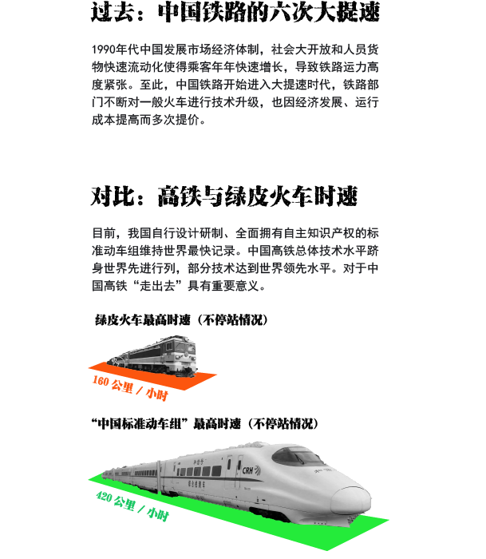
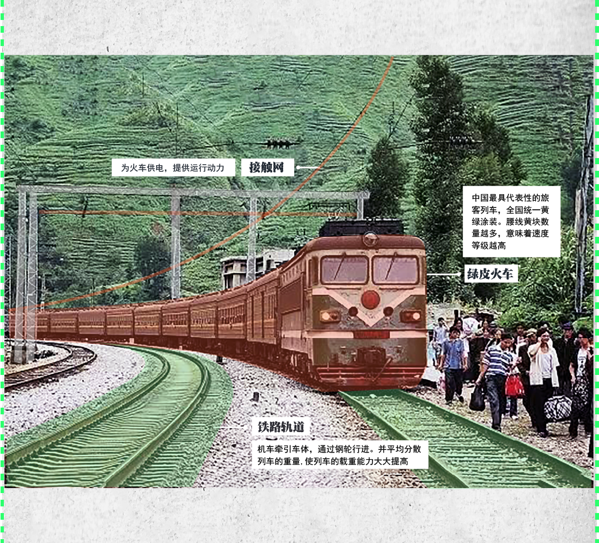

中国从1953年开始制定第一个“一五计划”，对国家重大建设项目，生产力分布和国民经济中亚比例关系等做出规划，为国民经济发展远景规定目标和方向。



②从调查数据可知，中国每个“五年计划”都有规划建设公益慢火车，为沿路群众服务。（数据来源：中国铁路局）
③截止至2021年，全国铁路共有81对绝对公益扶贫“慢火车”。逢站就停、票价低廉，不计上座率、客流量、效益成本，为沿线人民提供交通服务。
中国从1953年开始制定第一个“一五计划”，对国家重大建设项目，生产力分布和国民经济中亚比例关系等做出规划，为国民经济发展远景规定目标和方向。


-->
中途路线
长途路线
中国”慢火车“分布
结合地形走势图，我们可以看出中国”慢火车“行驶区域主要分布在中国地形的二级和三级阶梯。且受地形、温度、施工工条件和科学技术等因素限制，火车经过一级阶梯上区域较少。因为高原地区开发困难，如建设青藏铁路，施工需要面临的高寒、缺氧、冻士和低压等问题。
短途路线
0-300KM
行驶里程在0-300KM的短途列车居多，高达50列，占现存慢火车总数的61.7%。且多分布于北部山脉、中部中原、西部高原、盆地地区。帮助人口较多、地势崎岖、其他交通工具有所限制的不发达边远山区。沿途居民多用于走亲访友、问医求学，贩货赶集等日常功能。
中途路线 300-500KM
行驶里程在300KM-500KM的中途列车，共25次列车，占现存慢火车总数的30.8%；多分布于东三省、西北、西南地形分界线周围。多横跨两省或贯穿一省，线路较长。北部山脉、西部高原、盆地地区。帮助短途慢火车未覆盖，人口较稀疏的少数民族地区。作为沿途居民的中短途辅助交通工具，多用于贩货赶集、问医求学等日常功能和季节性贸易等特殊用途。
长途路线 ≥500KM
中国”慢火车“行驶里程达500KM以上，共六次列车，占现存慢火车总数的7.4%。分布于云贵川、新疆、黑龙江、湖南与两广偏远地区。列车少而分布广—连接人口较少、地势偏远、其他交通工具无法深入贯通的区域。作为低价便民的长途交通工具，帮助群众跨省贸易、去大城市看病、大学生求学等。